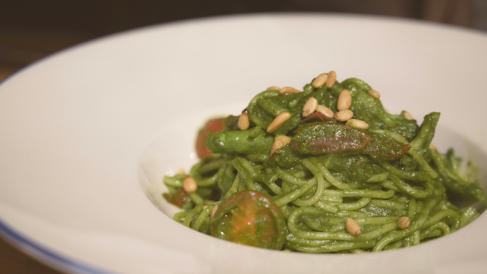

Green Spaghetti
Home

Mexican green spaghetti
Another staple in mexican households and my childhood favorite meal. This can be made with chicken on the side!
Ingredients
- 4 poblano peppers
- 1/4 of white onion
- 2 garlic cloves
- cilantro
- hondurean or salvadorean sour cream
- 1.5 tablespoon of chicken bouillon
- 1 tablespoon of salt
Steps
- Wash the produce with baking soda for at least 15 minutes and start your oven, set to broil for 400 degrees F
- While the produce gets cleaned, start your pasta water
- Once the produce is cleaned, dry it, poblano peppers on a baking sheet. Bake until the top is charred and then flip - about 10 minutes one each side. Once done cool them in a bowl with a lid.
- While the veggies cool, start the chicken. Season lightly with salt, garlic powder, onion powder and paprika and cook throughly.
- Scrape the charred layered from the poblano peppers and place them in a blender with the onion, garlic, sour cream, chicken boullion, salt and fresh cilantro. Blend until smooth. If too chunky go ahead and add some water.
- Pour the salsa into a new pan or you can use the chicken pan, simmer on medium-low.